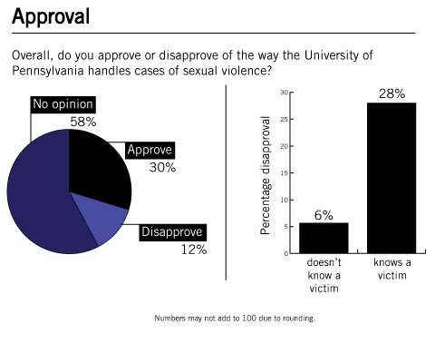
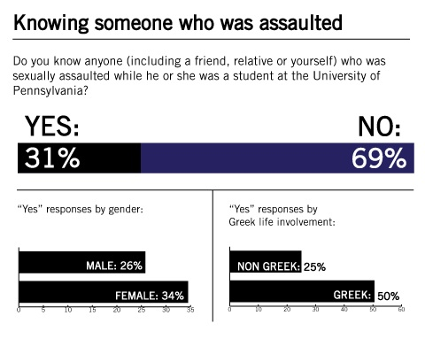
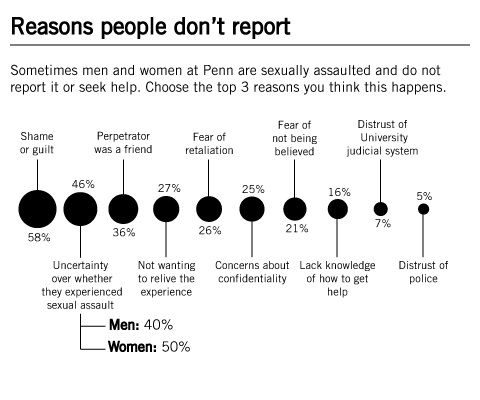
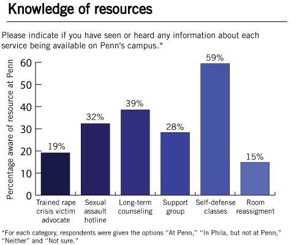
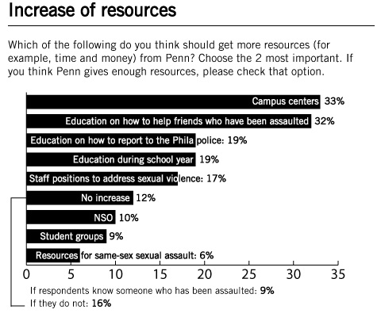

In the past year, dozens of colleges and universities have come under fire for allegedly sweeping sexual assaults under the rug and mistreating students who reported sexual violence. From lawsuits filed by students to investigations by the federal government, the cases have brought national attention to the issue of sexual violence on college campuses — and have prompted criticism of the way colleges respond to sexual assault cases.
Amidst this tumultuous climate, a recent Daily Pennsylvanian poll of Penn undergraduates shows that students are, in general, broadly under-informed when it comes to the resources offered on campus, despite the fact that knowing a victim of sexual assault at Penn is relatively common.
The criticism of other schools’ administrations has been sharp, but here, most students do not have strong opinions about the way Penn handles sexual assault, though most say the University should devote more resources to address the issue.
The poll was conducted for a week-and-a-half-long period at the end of September and included 974 responses, with a margin of error of plus or minus 3.4 percentage points.
Overall, the data show that, in many regards, Penn is not immune to the trends in United States society. At the same time, they provide insight into the particulars of the culture at a school that has been mostly unscathed by the wave of resentment against colleges for how they address sexual assault.
No strong opinions on University handling of sexual violence
In contrast to the headline-grabbing outrage expressed toward administrators at other colleges, most Penn students do not have strong opinions on the University’s handling of sexual assault. Overall, most respondents — 58 percent — say they had no opinion on the way Penn handles cases of sexual violence. Almost a third of undergraduates say they approve, and 12 percent say they disapprove.
However, people who know someone who was sexually assaulted at Penn are almost five times more likely than those who do not — 28 percent to 6 percent — to say they disapprove.
The difference between those two groups, while stark, is a natural result of some students having more personal knowledge of Penn’s process for handling sexual violence than others, experts say.
“Those people would often be more critical of the process than people who haven’t had to go through the process,” said Nina Harris, a former violence prevention educator at the Penn Women’s Center, of the results. “The people who haven’t done it don’t know what to have an issue with.”


Sexual violence: common and underreported
The poll finds that 31 percent of undergraduates know someone, including friends or themselves, who was sexually assaulted while he or she was a student at the University.
“That’s the tragedy,” said Deborah O’Neill, a clinician in Counseling and Psychological Services, who received a doctorate in social work from the School of Social Policy & Practice. Her dissertation, entitled “Responding to College Acquaintance Rape,” included a study of resources offered at Penn. “It’s far more common than it should be.”
Of the people who know someone who has been sexually assaulted at Penn, 57 percent know someone who was assaulted within the last year, and a quarter say the most recent incident they know about was reported to law enforcement or University officials.
The findings mirror academic work focusing on sexual violence in society at large, which shows a high rate of sexual violence in the United States and a low level of reporting the violence to authorities. In a college setting, some studies have shown that students are at a higher risk of being raped and sexually assaulted than non-students of the same age group, due to a number of risk factors — including youth and high alcohol consumption — that are present together on college campuses.
Survey respondents also answered why they thought students at Penn chose not to report sexual assaults. The most common response was “shame or guilt,” with 58 percent selecting it as one of the top three reasons. The finding gets at the heart of a culture that many experts say contributes to the low levels of reporting and high levels of shame among victims of sexual violence.
Stigma around sexual assault, O’Neill said, stifles conversation about the topic among the general public.
“If the culture around [victims] is not open to validating their experience or providing support or speaking out against issues of power and control, then that certainly is a large responsibility for someone who is trying to recover from whatever kind of victimization they’ve experienced,” she said.
Following shame or guilt, the next most common reason students say sexual assault goes unreported is uncertainty over whether what a victim experienced was sexual assault. After that, respondents say students don’t report sexual violence because the perpetrator was a friend.
“If someone is assaulted by a stranger, they receive a different kind of response than someone who’s assaulted by a friend,” O’Neill said, adding that many people have a hard time imagining why someone would harm a friend.
Studies show that around 90 percent of college women who are sexually assaulted know their assailant. O’Neill, however, said she expected that many students do not know how common assault by a non-stranger is.
Greeks most likely to know sexual violence victims
The greatest demographic predictor of knowing a student who had been assaulted was whether the respondent was in a social fraternity or sorority. Students in a social fraternity or sorority are twice as likely to know someone who has been sexually assaulted, 50 percent to 25 percent, than students who are not involved with Greek life.
While the finding does not necessarily imply that there is a higher prevalence of sexual assault among people involved in Greek life — it could be explained by students in fraternities and sororities simply knowing more people — it does dovetail with a broader narrative about college life in the United States.
“They throw the parties in the houses with the alcohol, with the dim lights, with the mass humanity in a really small space,” said College senior Jeremy Pincus, who is in a fraternity and is the president of all-male peer sexual violence education group One in Four.
“I don’t think that joining a fraternity inherently increases your chances of committing a violent crime. When we look at society and a culture as a whole there are a lot of factors that play into how we view sex, how we view masculinity, how we view social interactions,” he said. “Things get misconstrued and misinterpreted and bad things happen.”



Students under-informed on resources
Despite a presentation during New Student Orientation explaining the resources available for victims of sexual assault and posters throughout campus reinforcing where to find those resources, students reported low levels of resource knowledge. For all but one of the six campus resources presented in the poll, a majority of respondents did not know the resource was available at Penn.
Self-defense classes, which are offered through the Division of Public Safety, were the most well-known resource, which 59 percent of respondents said were available at Penn. The next most-identified resource, which 39 percent of respondents said was available, was long-term counseling for victims of sexual assault, offered through Counseling and Psychological Services.
While Special Services — a department in the Division of Public Safety — offers victim advocacy services, students were not very likely to know about that resource, which many experts view as crucial to the well-being of victims of sexual violence. Nineteen percent of students said a trained rape crisis victim advocate was available at the University, and 36 percent of respondents said they hadn’t heard of a victim advocate being available in Philadelphia or at Penn. An additional 35 percent said they weren’t sure whether they had heard of the service.
Surprisingly, levels of resource knowledge among people who knew someone who had been assaulted did not differ from overall levels — possibly a symptom of the low rate of reporting sexual violence to University officials or to the police.
When asked to pick two services of a list of eight to receive more funding or to indicate that Penn currently provides enough resources, a third of students select campus centers that provide services for victims of sexual violence, such as the Penn Women’s Center, the LGBT Center and Counseling and Psychological Services. About an equal proportion of respondents expressed that they would prefer more education on how to help friends who have been sexually assaulted. Twelve percent said that the University provides enough resources.
Most education comes early
Most students — 65 percent — said they learned about how to get help for a sexual assault during New Student Orientation. The results indicate that NSO has by far the broadest reach of all of the University’s sexual violence education efforts.
Early education takes on particular importance because of a “red zone” during the few days of freshman year when students are at a higher risk of experiencing sexual assault, said Susan Sorenson, a School of Social Policy & Practice professor whose research focuses on interpersonal violence. National studies have shown that the risk of sexual victimization is highest during the first few days students are on campus.
Other high-impact education efforts include posters, which 48 percent of students cited as a source of knowledge about where to get help, and resident advisers and graduate associates, which 30 percent cited.
The findings of the poll give additional weight to several trends reported anecdotally: Many students know a victim of sexual assault, reporting rates are low and, while the University has many resources for those who experience sexual violence, they are not widely known among students.
One overall takeaway from the poll is that, while Penn has its shortcomings in terms of educating students, it is not subject to the strong criticism faced by many peers.
For the student leaders and administrators at the University, the results provide a comprehensive, publicly available set of data to draw on in planning future advocacy and policy work.